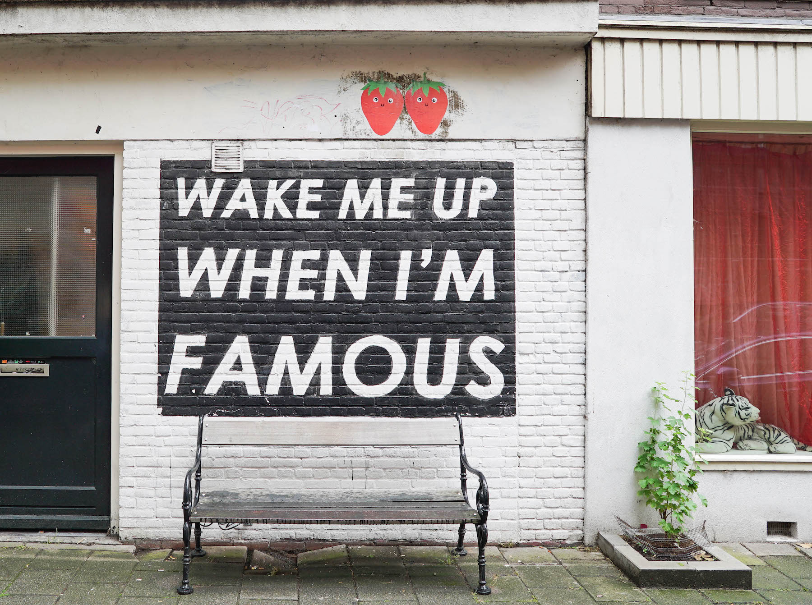
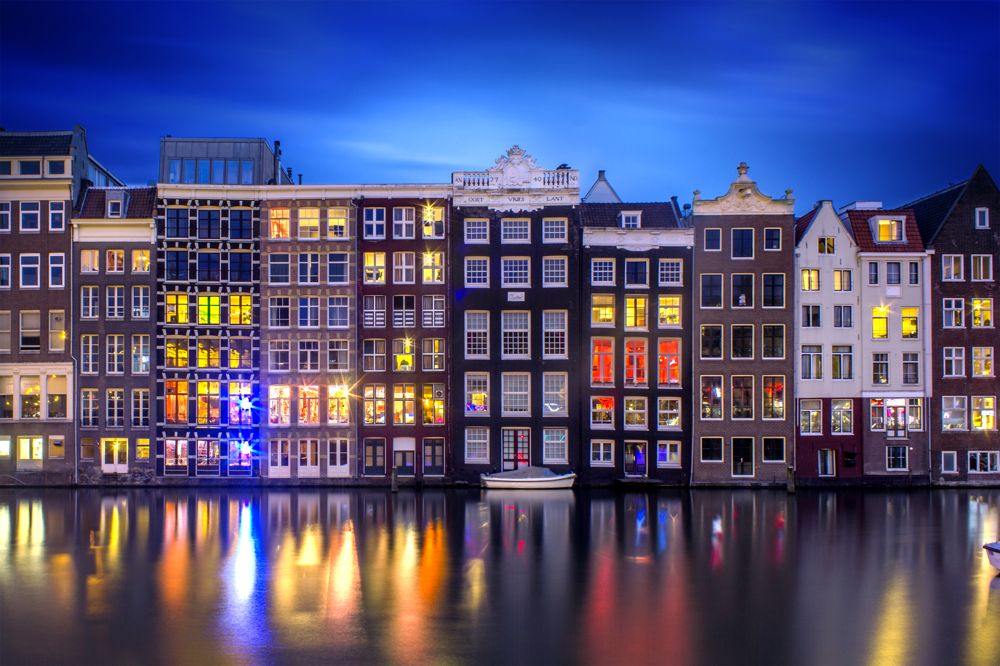
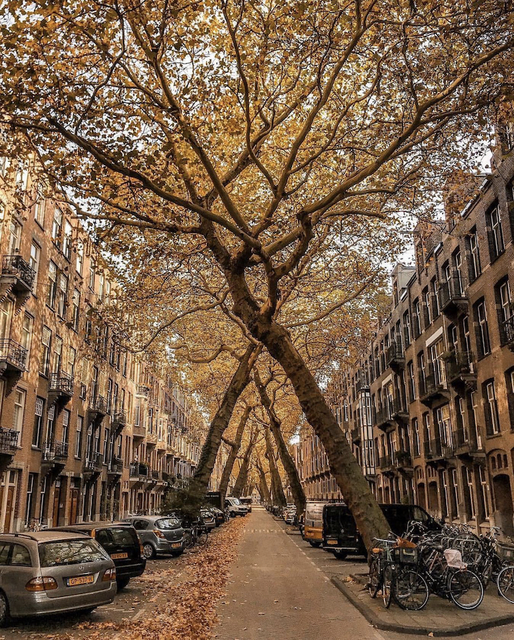

Amsterdam's Top 3 Selfie Locations
Wake Me Up
This “Amstergram” sensation, has become an iconic selfie spot, although you will most likely need someone else to take your photo for you. Situated in the hip and trendy De Pijp neighborhood, surround by many cozy cafes and eateries, this is a must stop place.
Google map and reviewsDamrak Waterfront
This waterfront is the original mouth of the Amstel River. The gabled houses backing onto the water are among the city’s most picturesque. You can’t miss this most iconic photo opportunity that is just a stroll down the road from Centraal Station.
Google map and reviewsLomanstraat Trees
One of the lesser known but cooler streets in Amsterdam is Lomanstraat in the South. Really awesome lane with large crossed Honey Locust trees. The great thing about this location is the ever evolving photo opportunities with the changing of the seasons.
Google map and reviews